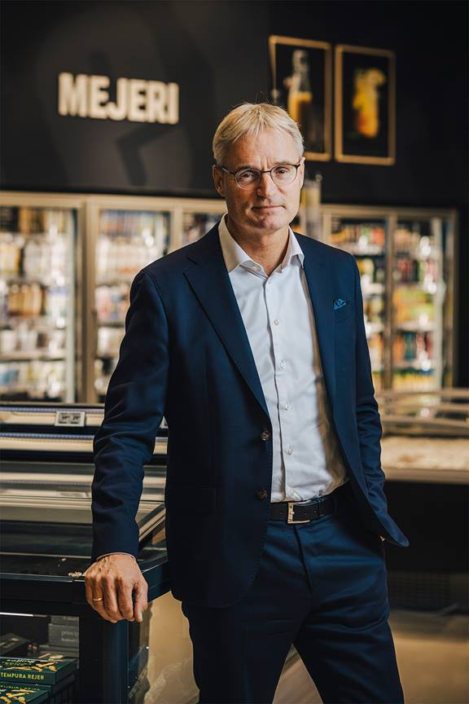

I en ny forening med navnet Danmark mod Madspild forpligter de deltagende
virksomheder sig til at følge Salling Groups eksempel og halvere deres madspild inden 2030 - i overensstemmelse med FN's verdensmål om bæredygtigt forbrug.

Hjælp Os
Du og din virksomhed kan melde sig ind i kampen mod madspild, og hjælpe os med at
nedskære Danmarks madspild inden 2030.
”Inden 2030 skal det globale madaffald (inkl. madspild, red.) på detail- og forbrugerniveau
pr. indbygger halveres og fødevaretab i produktions- og forsyningskæder, herunder tab af afgrøder efter høst, skal reduceres."
For at deltage i kampen kan du kontakte vores samarbejdende virksomhedspartnere direkte, eller nogle af organisationerne som vi samarbejder
med, som kan findes under organisationer.